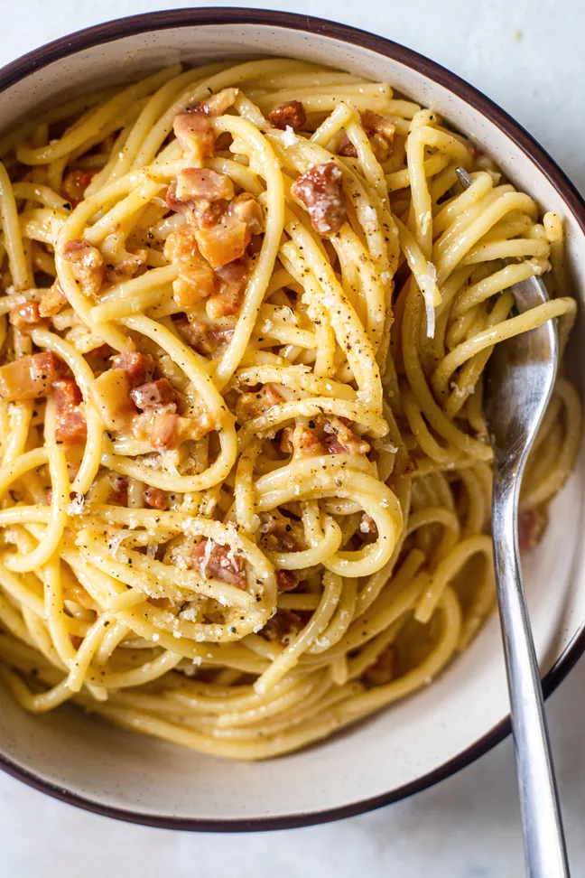

Carbonara

Description
Roman pasta dish containing eggs, cheese and bacon, apparently created for stationed American soldiers.
Ingredients
- Spagetti
- Curly Leaf Parsley
- Pancetta
- Garlic
- Olive Oil
- Pecorino Romano
- Parmesan
- Dry White Wine
- Eggs
Method
- Bring a pot of mildly salted water to the boil, add the pasta and boil until cooked.
- Add the whole cloves of garlic a hot frying pan along with the olive oil.
- One golden, remove the cloves and add the pancetta (thinly sliced), and fry until crispy.
- Add a splash of wine, then cook until the wine is reduced before removing from the heat.
- Combine in a bowl the eggs, the grated cheeses, the chopped parsley and a liberal amount of black pepper.
- Just before the pasta is done, reheat the bacon, and then add the pasta and bacon straight from the pans into the mixing bowl.
- Serve.